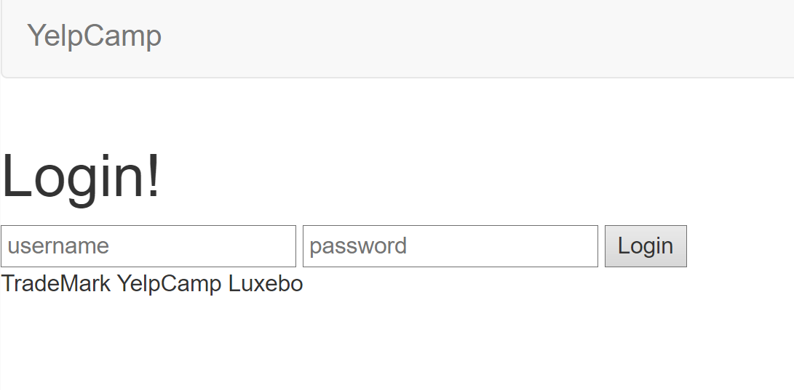
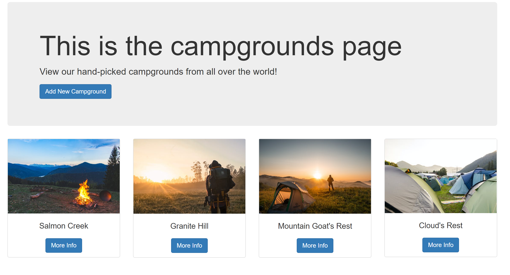
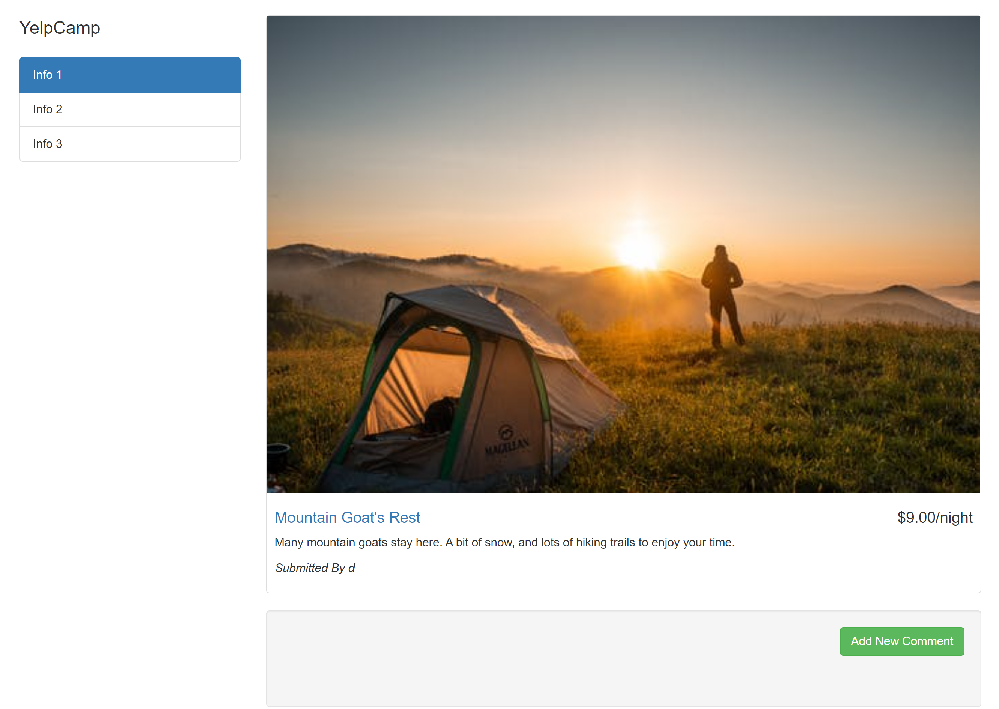

Yelp Camp
This website is designed for users to be able to create, view, review, and comment on different campgrounds that are all hosted within a Mongodb database. The mongodb holds together all authentication, campground information, and comments. The heroku service holds together the backend and hosts the entire site. Although this site's purpose is simple, the site is designed to show basic elements of frontend and backend development combined, including processes like hosting to the cloud and using a database to fuel dynamically created content.

Home Page
The Home page has a simple changing background that changes between pictures of different campgrounds. There is also a button entering the campgrounds page. This page is simply to introduce the user to the website in a simple manner. There is also a navbar that allows the user to change between different pages, including a login and sign up page.
The entire Yelp Camp project is credited to Colt Steele and The Web Development Bootcamp.

The Login Page is accessible through the navbar, allowing users to either access this page or the sign up page. The sign up page allows users to enter a new account authorized to create campgrounds, injecting a new user into the NoSQL database schema behind the scenes. The log in page allows users to access the database and pull their authorized account based on username and password- as long as they know both of these fields for their own username and password, they can access the campgrounds section. There are obviously issues with security in web backend, as the basic website is designed simply to showcase simple ability to enter and update data in a database actively, with simple authentication- the basics of having a backend.
Login Page
The Login Page is accessible through the navbar, allowing users to either access this page or the sign up page. The sign up page allows users to enter a new account authorized to create campgrounds, injecting a new user into the NoSQL database schema behind the scenes. The log in page allows users to access the database and pull their authorized account based on username and password- as long as they know both of these fields for their own username and password, they can access the campgrounds section. There are obviously issues with security in web backend, as the basic website is designed simply to showcase simple ability to enter and update data in a database actively, with simple authentication- the basics of having a backend.

Upon clicking the main button in the Home Page, the user enters this webpage. This page allows users to enter in data in the add campground route, along with view all of the current campgrounds created by users in a grid. The campgrounds adding section allows users that are logged in to add a new campground with a title, description, pricing, and image. This data is persistent within the Mongodb database, stored permanently as long as the site is hosted.
Campground Page
Upon clicking the main button in the Home Page, the user enters this webpage. This page allows users to enter in data in the add campground route, along with view all of the current campgrounds created by users in a grid. The campgrounds adding section allows users that are logged in to add a new campground with a title, description, pricing, and image. This data is persistent within the Mongodb database, stored permanently as long as the site is hosted.

Each campground on the campgrounds page is accessible, bringing up a particular details page based on that campground, showing image, description, title, pricing, and comments which are connected and hosted by the particular campground. The campgrounds allow any user to create a comment, allowing users to put any blurb of text below the campground. This comment is persistent, connected to the campground and the user in the database, in a way where the data exists in tandem of these two elements in the database.
In order to handle the number of routes and database issues, the website uses RESTful APIs in order to properly create splits in the webpages that allow clear and concise functionality splits. For example, the login feature is completely separate of the sign up feature, and it is kept separate of the comments feature. Each of these features are separated to keep the codebase clean and adjustable iteratively.
Details Page
Each campground on the campgrounds page is accessible, bringing up a particular details page based on that campground, showing image, description, title, pricing, and comments which are connected and hosted by the particular campground. The campgrounds allow any user to create a comment, allowing users to put any blurb of text below the campground. This comment is persistent, connected to the campground and the user in the database, in a way where the data exists in tandem of these two elements in the database.
In order to handle the number of routes and database issues, the website uses RESTful APIs in order to properly create splits in the webpages that allow clear and concise functionality splits. For example, the login feature is completely separate of the sign up feature, and it is kept separate of the comments feature. Each of these features are separated to keep the codebase clean and adjustable iteratively.
The database, hosting solution, and site
The database is Mongodb- the reasoning of using NoSQL over SQL is to allow a simpler framework to monitor users, campgrounds, and comments. With SQL, a bulky interface and backend is necessary, along with a large schema to contain the necessary data in a SQL database. This is cumbersome for a small website like this. For NoSQL, the database doesn't need a schema, and the general way of writing access code to Mongodb is much simpler, as the database is similar to JSON, which is a relatively easy to use in comparison to understanding and knowing SQL queries.
For hosting, heroku is used. This is the easiest price point hosting solution so far, easier than AWS, GCP, and Azure. In addition, having a hosting solution is necessary for hosting backend and frontend code, in which the dynamically served content can be displayed for as long as the services continues to be active for this website.
Below is the actual website. Feel free to take a look and use the website (though it has some dummy data initially). The data is persistent (login, campground, and comment data), so do mind what kind of data you feed in.
Yelpcamp